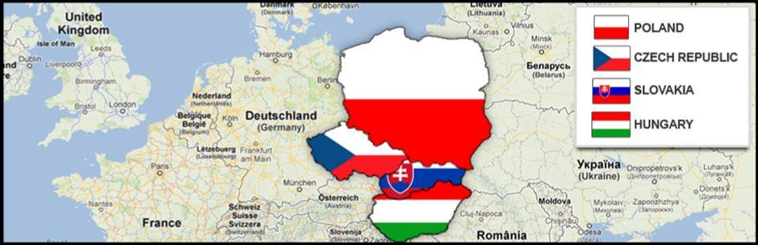
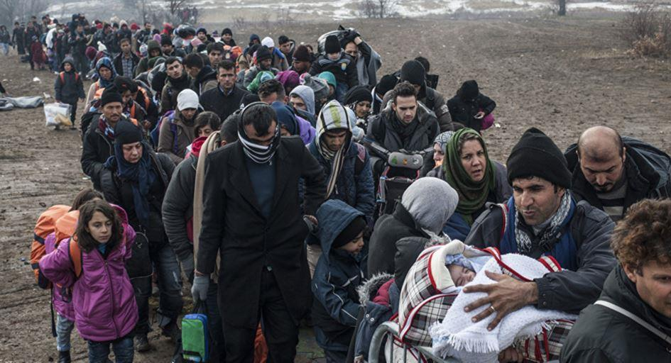

Pour le groupe de Visegrad (République tchèque, Pologne, Hongrie, Slovaquie) le sujet des flux migratoires est existentiel, et l’Europe serait bien avisée d’en tenir compte
Créé le 15 février 1991 par la Pologne, la Hongrie et la Tchécoslovaquie (qui se scindera en deux États, la République tchèque et la Slovaquie en 1993), le groupe de Visegrád plonge ses racines dans le XIVe siècle : en cette même villégiature royale non loin de Budapest où, en 1335, le Roi de Hongrie Charles-Robert d’Anjou, Jean Ier de Bohème et Casimir III de Pologne se retrouvèrent pour sceller une alliance qui fera date.
Toute personne sensée comprendra qu’il s’agit d’une entité voire identité géopolitique et culturelle à part entière dont il serait malvenu d’ignorer la spécificité (et l’influence) – ce que semble faire depuis des décennies le noyau de la UE : L’intégration de l’Europe centrale à l’Occident avait été effectuée, et nous étions arrivés à « la fin de l’Histoire »
Rajoutons à cela la rebelle Hongrie dont l’histoire est intrinsèquement liée à l’Autriche
Succédant à l'empire d'Autriche, la dénomination officielle d'Autriche-Hongrie apparaît en 1867, mais désigne un État déjà constitué dès la première partie du XVIIIème siècle. C'est la dernière forme politique qu'ont prise les possessions de la dynastie impériale des Habsbourg-Lorraine en Europe centrale.
N’oublions pas la Slovénie étroitement liée à la Slovaquie, la Bulgarie et la Croatie issue de la Yougoslavie détruite par les USA et consort – et nous avons devant nous un véritable continent au sein même de l’Europe.
Ces huit pays de l’est de l’Union européenne (Bulgarie, Hongrie, Pologne, République Tchèque, Roumanie, Slovaquie et Slovénie) qui ont accepté le principe d’une augmentation de la contribution des États membres au prochain budget à long terme de l’UE pour compenser le départ du Royaume-Uni.
Et néanmoins…
Les rêves ayant une fâcheuse habitude de se briser, le rêve eurounioniste des ex satellites de l’URSS une fois devenu réalité – répondit-il à l’aspiration si forte et si sincère ?
La réponse « non » semble être de mise actuellement.
Laissons de côté pour le moment les différences culturelles et sociétales entre les pays de l’est conservateurs souverainistes et les élites occidentales globalisantes et notons que :
Le plus puissant briseur de rêves est le tsunami migratoire qui déferle sur l’Europe.
La grogne monte chez les peuples occidentaux. – L’exemple récent le plus « flagrant » étant le soulèvement populaire dans la ville allemande de Chemnitz : 240 000 habitants étaient sortis dans la rue suite à l’assassinat d’un allemand de 35 ans par deux migrants, un afghan et un irakien.
Les manifestations se sont poursuivies pendant plusieurs jours et de façon si active, que la police locale s’est vue dans l’obligation de demander de l’aide à Leipzig et Dresde voisins. Les manifestants ont bien évidement été qualifiés, par la presse européenne officielle, de « l’extrême droite » et même « fascistes ». Il y a même un côté drôle dans cette histoire –
certains médias ont déterré le terme « RDA » (avec un « ex » précédant bien sûr) pour désigner cette partie Est de l’Allemagne réunie. Mais à l’Est, elle est clairement exprimée au niveau des politiques et des dirigeants des États :
« La politique migratoire de l'Europe est un échec », déclarait déjà en janvier le Premier ministre hongrois, Viktor Orban, tout en demandant, avec son homologue polonais, Mateusz Morawiecki un plus grand pouvoir décisionnaire dans l'avenir du bloc européen.
Une ligne de fracture se dessinant le long de l’ancien rideau de fer se fait de plus en plus concrète et frise la confrontation
Ainsi, le Parlement Européen a demandé au Conseil de l’Europe d’ouvrir la procédure de sanctions (article 7 du Traité) contre la Hongrie pour le non-respect des valeurs européennes – respect de la démocratie et de la liberté des médias, des droits de l’homme, de l’indépendance de la justice, mais aussi et surtout pour le refus du pays de respecter la politique migratoire européenne (en pleine mutation, soit-il dit au passage).
Et à l’inverse, le premier ministre de la Pologne Mateush Moravetsky vient de limoger le ministre des investissement et du développement Pavel Horonjiy : lors de la discussion sur le thème «De quelle politique d’intégration la Pologne a-t-elle besoin ? » Horonjiy avait déclaré qu’il était indispensable d’augmenter le flux des immigrants vers la Pologne car ils « assurent la prospérité des pays qui réussissent le mieux » !
De l’autre côté, le premier ministre tchèque, Andrej Babis, a déclaré vendredi 22 juin, à la sortie du conseil des ministres à Prague « Nous ne pouvons pas permettre que les migrants illégaux entrent sur notre territoire [ …] Les passagers frontaliers seront contrôlés dans ce cas-là par la police, mais nous avons aussi un plan d’urgence aux termes duquel les douaniers et éventuellement l’armée seront déployés»
Le nouveau rideau de fer sera-t-il bâti par les immigrants ?
Partager cette page